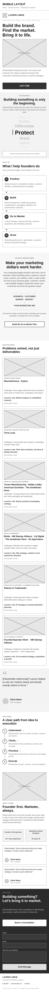
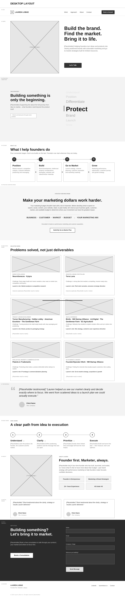

The welcome section will introduce visitors to my work and clearly communicate the purpose of the site. The main message, "Build the brand. Find the market. Bring it to life." will introduce my approach to helping founders develop their brand and bring their ideas and products to market. This section will include a large image, a brief introduction, and a call-to-action that directs visitors to the contact section.
This section will introduce the different areas involved in bringing an idea to market. An animated text element will cycle through the words Understand, Position, Differentiate, Protect, Brand, Launch, and Grow. The animation will help communicate that developing a successful business involves more than creating a product and that each stage plays a role in bringing it to market.
This section will organize my services into four areas: Position, Build, Go to Market, and Grow. Position will focus on market research, competitive analysis, customer definition, positioning, and messaging. Build will include brand development, intellectual property considerations, packaging, websites, and sales or investor materials. Go to Market will focus on launch strategy, customer acquisition, marketing planning, and channel strategy. Grow will include marketing performance, optimization, customer journey, and growth strategy.
The "Make your marketing dollars work harder" section will focus on helping founders make informed decisions about where to invest their marketing budget. Rather than recommending the same marketing channels for every company, the strategy will consider the business goals, customer, market, and available budget before determining the appropriate marketing mix. This section will also highlight my experience in performance marketing and customer acquisition.
The selected work section will feature examples of projects that demonstrate how I have helped companies solve different business and marketing challenges. Projects may include market analysis, pitch decks, product and brand development, packaging, websites, intellectual property, go-to-market strategy, and performance marketing. Each project will include an image, the challenge or business problem, and a brief description of my role and contribution. The goal of this section is to focus on problems solved rather than simply displaying completed deliverables.
Testimonials will be included throughout the site to provide additional credibility and show the experience of people who have worked with me. The testimonials will highlight areas such as strategic thinking, marketing expertise, collaboration, and the ability to turn ideas into actionable plans.
The approach section will explain my process for working with founders through four steps: Understand, Clarify, Prioritize, and Execute. The process begins with understanding the product, founder, customer, and market. From there, I help clarify positioning and goals, prioritize the most important opportunities, and create a plan that can be executed.
The about section will provide a brief overview of my experience as both an entrepreneur and marketing strategist. It will highlight my experience building companies, developing brands, bringing products to market, and working across different areas of marketing. The section will also include a professional image and several key professional highlights.
The final section will encourage visitors who are building a company, brand, or product to contact me about working together. It will include a simple contact form and a call-to-action to schedule a consultation. Navigation links and call-to-action buttons throughout the site will direct visitors to this section.
The footer will include my name, professional website, LinkedIn profile, contact information, and basic copyright information.

